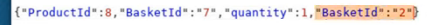

some access control only checks the first of duplicate parameters so sending 2 of the same "bad" parameters, only one of them will be flagged and the other will pass through
also just because the ui filters your input, doesn't mean that the server filters so sometimes can submit malicious xss in the parameters of a request. for example an xss script set to be a user's username when registering is a very dangerous stored xss